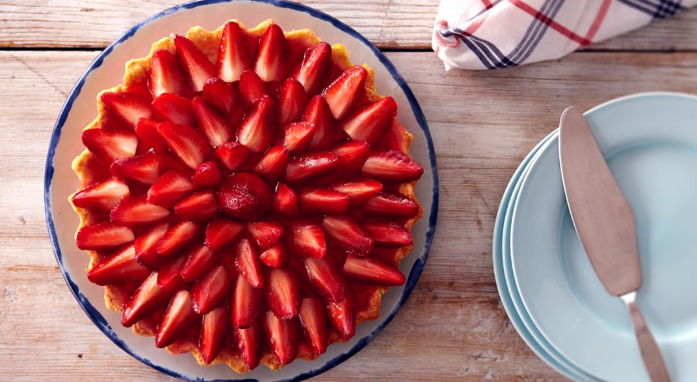
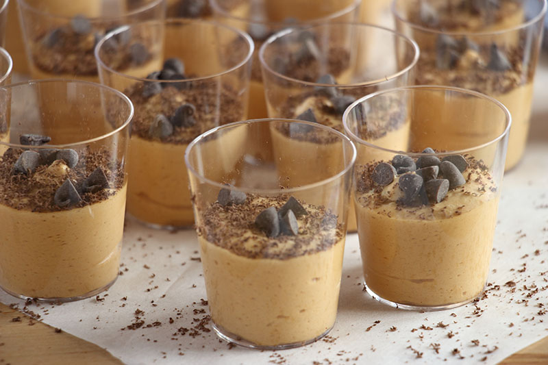
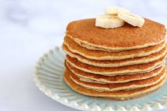
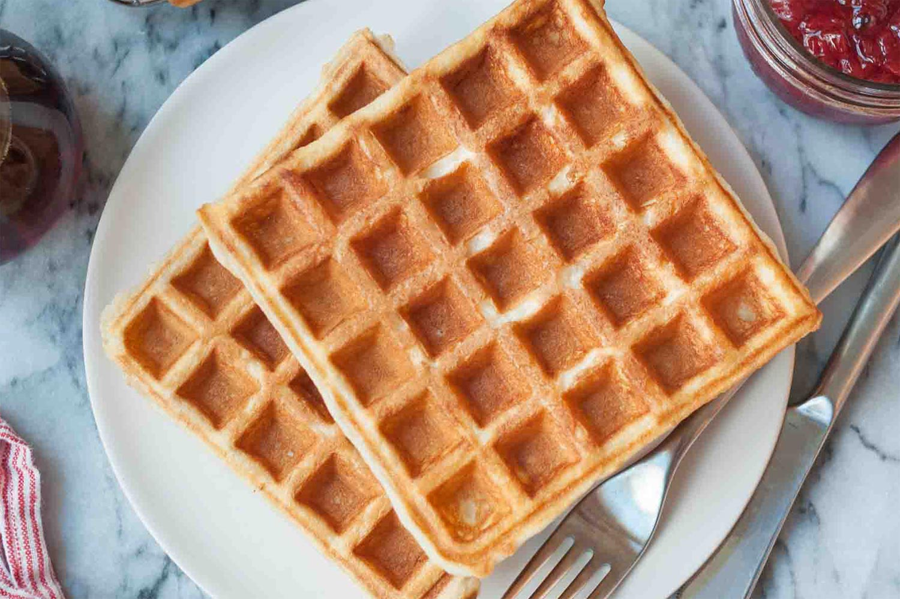

Postres
Postre de frutillas
INGREDIENTES
- 3 discos de merengue chicos
- 360 cc de crema
- 4 cucharadas de azucar
- 500 g de frutillas
PROCEDIMIENTO
- Mezclar la crema con el azucar. Es importante que la crema esté bien fría. Reservar
- Cortar las frutillas en cuartos.
- Armado: poner un disco de merengue, arriba la crema y una capa de frutillas. Repetir lo mismo con las otras dos capas.
Mousse helada de dulce de leche
INGREDIENTES
- 250 g de crema de leche
- 350 g de dulce de leche común
- c/n chocolate
- c/n merenguitos
- opcional: nueces, almendras o salsa de chocolate
PROCEDIMIENTO
- Batir la crema a 1/2 punto (que no llegue a chantillí)
- Unir con dulce de leche y seguir mezclando, ojo no mucho, que la crema no se pase.
- Verter la preparacion en vasitos.
- Agregarle chocolate rallado y/o nueces y merenguitos.
- Servir.
Panqueques
INGREDIENTES
- 2 tazas de harina leudante
- 4 huevos
- 2 tazas de leche
- 1 pizca de sal
- 3 cucharadas de aceite
PROCEDIMIENTO
- Colocar todos los ingredientes en una licuadora y unir.
- Djear descanzar la preparación 1/2 hora en la heladera.
- Hacer los panqueques en una sartén con un poquito de manteca.
- A comer con dulce de leche!!!.
Waffles
INGREDIENTES
- 200 g de manteca
- 4 huevos
- 700 ml de leche
- 400 g de harina 0000
- 100 g de harina integral
- 1 pizca de sal
- 4 cucharadas de azucar
- 3 cucharaditas de polvo de hornear
- Dulce de leche, frutas y miel (opcional)
PROCEDIMIENTO
- Batir los huevos con el azucar.
- Incorporar la manteca derretida y la leche.
- Agregamos los ingredientes secos.
- Dejar descansar la preparación unos 20 minutos.
- Preparar los waffles en una wafflera.
- Servir con lo que más te guste.